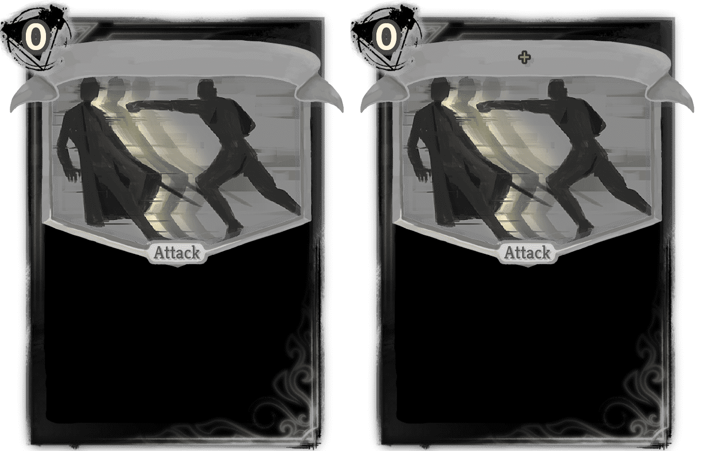

| Name | Image | Rarity | Type | Cost | Description |
|---|
| Crimson Claws |  | Common | Attack | 2 | Slash. Deal 4 (5) damage and heal 2 (3) HP 3 times. |
| Ghghgh |  | Common | Skill | 1 (0) | Play a random copy from Exhaust pile to random target. Exhaust. |
| Suspicious Contract |  | Common | Skill | 1 | Gain 4 Block for 2 (3) times. |
| Circulation |  | Uncommon | Skill | 2 | If you didn't lose HP this turn, gain 3 (4) Strength and Protection at the start of next turn. |
| Ever-spinning Gearwheel |  | Uncommon | Attack | 3 | Slash. Gain 7 Smoke. Deal 17 (21) damage and apply 3 (4) Smoke 2 times. |
| Mince |  | Uncommon | Attack | 2 | Deal 8 (10) damage and apply 3 (4) Bleed 2 times. |
| Opening Ceremony |  | Uncommon | Skill | 4 | Innate. Gain 18 (30) Block. Next turn your cards cost [E] less. |
| Overspeed |  | Uncommon | Attack | 3 (2) | Blunt. Deal 6 damage 2 times. Whenever you play a card, increase this card's damage by 1 this turn. |
| Rooster's Crow |  | Uncommon | Skill | 0 | Gain 2 (4) Strength this turn. Retain. |
| Shaded Strike |  | Uncommon | Skill | 4 (3) | Gain 2 Strength. Draw 1 card. Whenever you lose HP, this card cost [E] less. Retain. |
| Taste Test |  | Uncommon | Skill | 1 | Gain 1 Artifact. Gain [E] ([E]). Exhaust. |
| Chorus |  | Rare | Skill | 3 (2) | This turn, whenever you play a card, gain 1 Strength for one turn. Retain. |
| Let's Have Some Fun~ |  | Rare | Skill | 2 | Gain 7 (9) Block. Gain [E] [E] [E] ([E]). Exhaust. |
| Afterimage |  | Basic | Skill | | Evade card. Evade any damage is that at or below 7 (9), then discard this card. |
| Allas Workshop |  | Basic | Attack | 2 | Pierce. Deal 18 (26) damage. Enemy loses 2 Strength. |
| Atelier Logic |  | Basic | Attack | 2 | Range. Pierce. Deal 8 (11) damage 3 times. |
| Charge |  | Basic | Attack | 3 | Blunt. Deal 30 (40) damage. If this card kills an enemy, play this card again with random target. |
| Charge and Cover |  | Basic | Attack | 2 | Pierce. Deal 10 (13) damage. Gain 7 (10) Block. |
| Crystal Atelier |  | Basic | Attack | 3 | Slash. Deal 11 (15) damage 3 times. |
| Degraded Chain |  | Basic | Attack | 2 | Blunt. Deal 22 (30) damage. Gain Block equal to unblocked damage dealt |
| Degraded Fairy |  | Basic | Attack | 1 | Slash. Deal 10 (13) damage and apply 1 Fairy 2 times. |
| Degraded Lock |  | Basic | Attack | 3 | Blunt. Deal 29 (38) damage. Gain 12 (16) Block. If enemy has Strength, its value becomes negative, otherwise enemy loses 2 Strength. |
| Degraded Pillar |  | Basic | Attack | 3 | Slash. Make enemy loses 14 (18) HP and apply 3 (4) Fairy 2 times. Gain 12 (16) Block. |
| Degraded Shockwave |  | Basic | Attack | 4 | Blunt. Deal 12 (16) damage to ALL enemies 3 times. Apply 1 (2) Weak to ALL enemies. Gain 5 Protection. |
| Dodge |  | Basic | Skill | | Evade Card. Evade any damage is that at or below 4 (6), then discard this card. |
| Durandal |  | Basic | Attack | 2 | Slash. Deal 7 (10) damage 2 times. Gain 2 (3) Strength. |
| Focus Spirit |  | Basic | Skill | 2 | Gain 20 (26) Block and 3 (4) Strength. |
| Focused Strikes |  | Basic | Attack | 3 | Slash. Deal 8 (11) damage 3 times. |
| Level Slash |  | Basic | Attack | 2 | Blunt. Deal 13 (18) damage and apply 3 Bleed 2 times. |
| Light Attack |  | Basic | Attack | 1 | Deal 6 (9) damage. |
| Light Defense |  | Basic | Skill | 1 | Gain 5 (8) Block. |
| Mook Workshop |  | Basic | Attack | 2 | Slash. Deal 15 (20) damage. Gain [E] [E] [E] . |
| Old Boys Workshop |  | Basic | Attack | 1 | Blunt. Deal 6 (10) damage. Gain [E] [E] . |
| Ranga Workshop |  | Basic | Attack | 0 | Pierce. The cost can't be changed. Deal 3 (4) damage 3 times. Apply 2 (3) Bleed. |
| Spear |  | Basic | Attack | 2 | Pierce. Deal 10 (13) damage 3 times. |
| Upstanding Slash |  | Basic | Attack | 2 | Slash. Deal 15 (20) damage 2 times. |
| Wheels Industry |  | Basic | Attack | 4 | Blunt. Deal 38 (50) damage. Enemy loses 12 (16) Strength this turn. |
| Zelkova Workshop |  | Basic | Attack | 0 | The cost can't be changed. Deal 4 (6) damage 2 times. Draw 1 card. |
|  | Special | Attack | 0 | |
| Armor Piercing Ammunition |  | Special | Attack | 0 | Ammunition. Deal 4 (6) damage. Gain 1 Strength this turn. |
| En Garde |  | Special | Skill | 1 | Gain 2 (3) Strength and Frail. Draw 1 card. Exhaust. |
| Fascinating Fabric |  | Special | Skill | 2 | Gain 10 (20) Block 3 times. Exhaust. Retain. |
| Flame Ammunition |  | Special | Attack | 0 | Ammunition. Deal 3 (5) damage. Apply 2 Burn. |
| Frost Ammunition |  | Special | Attack | 0 | Ammunition. Deal 2 (4) damage. Apply 1 Paralysis. |
| Gam of Four Trigrams |  | Special | Power | 0 | You can play only 1 Trigram Card each turn. Gain [E] . Retain. |
| Geon of Four Trigrams |  | Special | Power | 0 | You can play only 1 Trigram Card each turn. Gain 1 Strength. Retain. |
| Gon of Four Trigrams |  | Special | Power | 0 | You can play only 1 Trigram Card each turn. Gain 1 Dexterity. Retain. |
| Life Insurance |  | Special | Attack | 2 | Slash. Deal 10 (12) damage and apply 2 (3) Weak, Vulnerable and Constricted to ALL enemies. Heal 2 HP for each enemy attacked. Exhaust. Ethereal. |
| Pinpoint Breakthrough |  | Special | Attack | 0 | Pierce. Deal 54 (64) damage. Remove all buffs and debuffs, increase the damage by same amount. Exhaust. |
| Prescript-I |  | Special | Skill | 0 | Gain 1 Strength. Exhaust. Ethereal. (not Ethereal.) |
| Prescript-II |  | Special | Skill | 0 | Gain 1 Dexterity. Exhaust. Ethereal. (not Ethereal.) |
| Prescript-III |  | Special | Skill | 0 | Draw 1 cards. Exhaust. Ethereal. (not Ethereal.) |
| Prescript-IV |  | Special | Skill | 0 | Gain [E]. Exhaust. Ethereal. (not Ethereal.) |
| Raging Storm |  | Special | Attack | 0 | Pierce. Apply 28 (36) Burn to ALL enemies. Exhaust. Ethereal. |
| Ri of Four Trigrams |  | Special | Power | 0 | You can play only 1 Trigram Card each turn. Draw 1 card. Retain. |
| To Claim Their Bones |  | Special | Attack | | Slash. Retain. When you are attacked, deal 18 (24) damage and apply 5 Paralysis and 3 (4) Bleed back. Exhaust this card at the start of turn. |
| Unlock II |  | Special | Attack | 0 | Deal 6 (8) damage 2 times. Add 1 Unlock III into your draw pile. Exhaust. |
| Unlock III |  | Special | Attack | 0 | Deal 6 (8) damage 2 times. Draw 1 card. Gain [E] . Exhaust. |
| As The Prescript Orders |  | Common | Skill | 1 | If you have no Block, gain [E] . Gain 8 (11) Block. |
| Back Attack |  | Common | Skill | 1 (0) | Add a random Attack into your hand. It costs 0 this turn. Exhaust. |
| Bi An |  | Common | Skill | 2 | Gain 16 (21) Block. Draw 2 cards. |
| Blind Faith |  | Common | Skill | 2 (1) | Gain 15 Block. Gain [E] . Lose 1 Strength this turn. |
| Brace Up |  | Common | Skill | 0 | Discard 1 card. Draw additional 2 (3) cards next turn. Retain for 1 turn when drawn. |
| Class and Respect |  | Common | Attack | 1 | Slash. Deal 3 (6) damage. Apply 1 Bleed. If there are no other Attack cards in your hand, gain [E] [E] . |
| Cleave Across |  | Common | Attack | 1 | Slash. Deal 6 (10) damage. Apply 1 Paralysis. |
| Coordinated Assault |  | Common | Skill | 1 | Gain 6 (9) Block. Discard 1 card to gain 2 Protection. Exhaust. |
| Dagger Press |  | Common | Attack | 1 | Pierce. Deal 4 (6) damage for 2 times. Draw 1 cards. |
| Dark Cloud |  | Common | Power | 2 (1) | Whenever you play Slash card, apply 1 Bleed. |
| Defense Order |  | Common | Skill | 2 | Gain 22 (30) Block and 4 (6) Smoke. |
| Desperate Struggle |  | Common | Attack | 1 | Slash. Deal 9 (12) damage. If your HP less than 30%, gain 2 Strength. |
| Diversion |  | Common | Attack | 0 | Deal 4 (6) damage to ALL enemies. |
| Draw of the Sword |  | Common | Skill | 1 (0) | Draw an Attack. If it is Slash card, gain [E] . Exhaust. |
| Endless Battle |  | Common | Attack | 2 | Deal 9 (12) damage 2 times. If your HP less than 30%, gain 10 (14) Block. |
| Energy Cycle |  | Common | Attack | 0 | Gain 2 (3) Charge. Deal 4 (5) damage. |
| Energy Shield |  | Common | Skill | 1 | Gain 8 (11) Block. Cost 1 Charge and gain 4 (5) Block. |
| Energy Strike |  | Common | Attack | 2 | Lose 2 HP. Deal 24 (32) damage. Cost 1 Charge, deal 8 (10) HP loss. |
| Engagement |  | Common | Attack | 0 | Slash. Deal 5 (8) damage. Add a En Garde into your draw pile. |
| Faith |  | Common | Skill | 1 | Gain [E] [E] ([E]). Exhaust. |
| Fierce Charge |  | Common | Skill | 2 | Draw 3 (4) cards, apply 3 (4) Burn for each Attack you drawn. |
| Fleche |  | Common | Attack | 2 | Pierce. Deal 18 (24) damage. Apply 1 (2) Vulnerable. |
| Fleet Edge |  | Common | Attack | 2 | Pierce. Deal 8 (12) damage 2 times. Draw 2 cards at the start of next turn. |
| Fleet Footsteps |  | Common | Skill | | Evade Card. Evade any damage is that at or below 6 (8), then heal 2 HP and discard this card. |
| Forward March |  | Common | Attack | 0 | Deal 3 (5) damage. If there are only Attack cards in your hand, gain [E] . |
| Frontal Dodge |  | Common | Skill | | Evade Card. Evade any damage is that at or below 10 (13), then discard this card and lose 1 HP. |
| Graze the Grass |  | Common | Attack | 0 | Deal 3 (5) damage. Gain [E] and 3 (4) Charge. Exhaust. |
| Great Serpents Impact |  | Common | Attack | 1 | Blunt. Deal 5 (6) damage 2 times. Increase the damage of Blunt card by 2 (3) this turn. |
| Guarding Stance |  | Common | Skill | 1 | Whenever you play an Attack this turn, gain 6 (8) Block. |
| Guidance of the Gears |  | Common | Skill | 1 | Gain 7 (9) Block and 2 (3) Smoke. Gain [E] [E] . Exhaust. |
| Handle Request |  | Common | Attack | 0 | Pierce. Deal 1 (2) damage. Apply 1 Burn. Gain 3 (5) Block. |
| Harpe |  | Common | Attack | 0 | Blunt. Deal 3 (6) damage. Gain 1 Plated Armor. |
| Hidden Blade |  | Common | Attack | 1 | Blunt. Gain 5 (7) Block, Deal 5 (7) damage. Cost 2 Smoke to apply 3 (4) Bleed. |
| High Kick |  | Common | Attack | 1 | Blunt. Deal 10 (14) damage. If you have at least 12 total emotion, draw 1 card. |
| Insurance Coverage |  | Common | Skill | | If this card is discarded from your hand, gain [E] ([E]). |
| Leap |  | Common | Attack | 1 | Deal 8 (12) damage. Cost 3 Charge, then draw 2 cards and draw 1 card at the start of next turn. |
| Low at Night, High at Day |  | Common | Skill | 0 | Gain 1 (2) Strength and Dexterity. When this card is drawn, discard this card and draw 1 card. |
| Mend Weapon |  | Common | Skill | 1 | Put a Attack from your hand on top of your draw pile, it cost [E] less this combat. If it is Pierce card, increase its base damage by 2 (4) . Exhaust. |
| Moulinet |  | Common | Attack | 3 | Slash. Deal 9 (12) damage for 3 times. Apply 2 (3) Vulnerable. |
| Multi-Block |  | Common | Skill | X | Gain 7 (9) Block for X times. |
| Multi-Hit |  | Common | Attack | X | Blunt. Deal 8 (11) damage for X times. |
| Multislash |  | Common | Attack | 1 | Deal 5 (7) damage 2 times. Singleton: Draw 1 cards. |
| Night in the Backstreets |  | Common | Attack | 1 | Deal 7 (10) damage 2 times. Then lose 1 Strength this turn. |
| Outburst |  | Common | Attack | 2 | Deal 14 (18) damage. Discard a random card with lowest cost in your hand and gain [E] [E] . |
| Parry |  | Common | Power | 1 | Whenever you play a card, gain 1 Block. Ethereal. (not Ethereal.) |
| Parry |  | Common | Attack | | Slash. Evade Card. Evade any damage is that at or below 6 (9), then Deal 1 damage back and discard this card. |
| Pinpoint Shot |  | Common | Attack | 3 | Blunt. Deal 28 (36) damage. Apply 2 (3) Bleed. If you have Ammunition in your hand, increase the damage of this card by 6. Exhaust. |
| Pound |  | Common | Attack | 0 | Blunt. Deal 5 (7) damage. |
| Preemptive Strike |  | Common | Attack | 1 | Slash. Innate. Deal 16 (20) damage. Exhaust. |
| Quick Attack |  | Common | Attack | 1 | Deal 6 (9) damage. Draw 2 cards. |
| Quick Suppression |  | Common | Attack | 2 | Deal 7 (10) damage and apply 2 Bleed 2 times. Gain 5 Charge. |
| Quickness |  | Common | Skill | 1 | (Retain.)Draw 3 cards. |
| Relay |  | Common | Skill | | If this card is discarded from your hand, put a card from your draw pile (or discard pile) into your hand. |
| Reload |  | Common | Skill | 1 | Add 2 (3) random Ammunition into your hand. |
| Rewind |  | Common | Skill | 1 | Gain 4 Charge. Return 2 (3) random cards from your discard pile into your hand. |
| Riposte |  | Common | Skill | 1 | Gain 7 (9) Block and 3 (4) Vigor. |
| Serpent Sword Technique |  | Common | Skill | 1 (0) | Choose 1 Slash card from your draw pile or discard pile, add it into your hand. Exhaust. |
| Sharp Swipe |  | Common | Attack | 1 | Pierce. Deal 7 (10) damage. If enemy has no Block, deal extra 4 damage. |
| Single Point Stab |  | Common | Attack | 0 | Pierce. Deal 3 (5) damage. Apply 1 Burn. Add all Single Point Stab in your draw pile into your hand. Before the battle starts, add 1 copy of this card into your draw pile. |
| Smoke Blow |  | Common | Attack | 1 | Blunt. Gain 3 (4) Smoke. Deal 8 (10) damage. Apply 3 (4) Smoke. |
| Smoking Pipe |  | Common | Skill | 0 | Gain 2 (3) Smoke and 8 (12) Block. |
| Snakes Prey |  | Common | Power | 1 | (Innate.)Whenever you apply Bleed, increase stack by 1. |
| Speared Sweep |  | Common | Attack | 2 | Deal 16 (22) damage to ALL enemies. |
| Standoff |  | Common | Attack | 1 | Deal 8 (11) damage to random enemy for each enemy in combat. |
| Strike Down |  | Common | Attack | 2 | Blunt. Deal 6 (12) damage. Play a random Blunt card from your draw pile. |
| Strong Strike |  | Common | Attack | 3 | Deal 24 (32) damage. If this card is the first card played this turn, gain [E] . |
| Structural Analysis |  | Common | Skill | 2 | Gain 8 (10) Block. Scry 11 (16). |
| Sunset Blade |  | Common | Power | 2 (1) | Whenever an Attack deals unblocked damage, apply 1 Burn. |
| Suppressing Shot |  | Common | Attack | 1 | Range. Gain 4 (6) Block. Deal 6 (8) damage. If any Ammunition in your hand, Block once more. |
| Switcheroo |  | Common | Skill | | If this card is discarded from your hand, draw 2 (3) card. |
| Tendon Chords |  | Common | Attack | 2 | Deal 6 (9) damage. Gain 2 (3) Strength. Heal 3 HP. |
| The Will of the City |  | Common | Skill | 3 (2) | Gain [E] [E] [E] . Draw 1 cards. Exhaust. |
| Thrust |  | Common | Attack | 1 | Pierce. Deal 9 (12) damage. If enemy has Block, double the damage. |
| Unavoidable Gaze |  | Common | Skill | 1 (0) | Put 1 card from your draw pile into your hand. Exhaust. |
| Unlock I |  | Common | Attack | 0 | Deal 6 (8) damage. Add 1 Unlock II into your draw pile. Exhaust. |
| Upbeat Performance |  | Common | Attack | 1 | Deal 5 (7) damage 2 times. |
| Violent Flame |  | Common | Power | 1 | Whenever you apply Burn, increases its stack by 1. Ethereal. (not Ethereal.) |
| Wallop |  | Common | Attack | 2 | Blunt. Deal 15 (20) damage. Apply 2 (3) Weak. |
| Want a Taste of this Chain? |  | Common | Attack | 0 | Slash. Lose 1 HP. Deal 8 (11) damage. Apply 1 Bleed. |
| Wedging Thorn |  | Common | Attack | 0 | Pierce. Deal 3 (6) damage. Apply 1 Vulnerable. |
| Will of the Prescript |  | Common | Skill | 2 | Gain 12 (16) Block. Singleton: Draw 3 (4) cards. |
| You're Soft |  | Common | Attack | 1 | Blunt. Lose 1 HP. Deal 9 (12) damage. Apply 3 (4) Bleed. |
| A Critical Moment |  | Uncommon | Skill | | Evade Card. Evade any damage is that at or below 9 (12), then discard this card and apply 3 (4) Bleed back. |
| A Golden Opportunity! |  | Uncommon | Skill | | Gain 2 Charge when drawn. Evade Card. Evade any damage is that at or below 9 (12), then discard this card and gain 3 Charge. |
| Absorb Impact |  | Uncommon | Skill | 2 | Gain 15 (22) Block and 6 Charge. |
| Acupuncture |  | Uncommon | Attack | 1 | If target has Block, gain [E] . Deal 4 (6) damage for 2 times. |
| Allout War |  | Uncommon | Skill | 0 | Exhaustall non-Attack cards in your hand. Gain 4 (6) Block and 1 emotion for each card Exhausted. |
| Assault Order |  | Uncommon | Attack | 2 | Deal 6 (8) damage 3 times. If enemy has at least 3 Smoke, gain 2 Strength. |
| Augury Kick |  | Uncommon | Attack | 3 | Hit. Deal 20 (26) damage. Gain 3 (4) Strength. |
| Automated Movement |  | Uncommon | Skill | 1 | Draw 2 cards. Add a copy of this card into your hand if this card is Exhausted. (Exhaust.) |
| Autonomous Rush |  | Uncommon | Skill | 1 | Gain 3 (4) Smoke. Draw 3 (4) cards. Exhaust. |
| B-blow It Up! |  | Uncommon | Attack | 1 | Exhausta card in your hand. Deal 10 (12) damage. Apply 1 (2) Paralysis. |
| Backstreets Dash |  | Uncommon | Attack | 1 | Pierce. Deal 8 (12) damage. Apply 1 Bleed. |
| Battle Command |  | Uncommon | Skill | 2 | Gain 10 (16) Block and 2 Strength. |
| Bayonet Combat |  | Uncommon | Skill | 2 | Gain 9 (12) Block. Add 2 (3) random Ammunition into your hand. |
| Bi Xi |  | Uncommon | Skill | 1 | Gain 5 Block and 1 (2) Strength. Exhaust. |
| Binding Arms |  | Uncommon | Attack | 2 | Blunt. Deal 12 (16) damage. Apply 1 Paralysis. Reduce this card's cost by [E] this combat. |
| Binding Chains |  | Uncommon | Attack | 2 | Deal 8 (12) damage 2 times. Singleton: Enemy loses 2 Strength. |
| Bite Off |  | Uncommon | Attack | 1 | Deal 4 (5) damage 2 times. Apply 1 (2) Bleed. |
| Bizarre Attack |  | Uncommon | Attack | 1 | Slash. Gain 3 (4) Block. Deal 2 (3) damage. Deal 5 (7) Thorns damage. |
| Blade Whirl |  | Uncommon | Attack | 2 | Deal 12 (14) damage to ALL enemies. Apply 1 (2) Paralysis and Bleed to ALL enemies. |
| Brawl |  | Uncommon | Attack | 1 | Slash. Deal 6 (8) damage 4 times. Change attack damage and attack times to a random Attack card in your hand when you play this card. |
| Bulky Impact |  | Uncommon | Attack | 2 | Blunt. Deal 12 (16) damage. Gain 7 Block and 5 (9) Charge. |
| Burning Flash |  | Uncommon | Attack | 2 | Slash. Deal 10 (15) damage. Apply 1 Burn. Exhaust 1 same name card in draw pile, then play this card again. |
| Butterfly Slash |  | Uncommon | Attack | 2 | Deal 17 (22) damage. Apply 4 (6) Burn. |
| C-chop It Off! |  | Uncommon | Attack | 2 | Slash. Deal 3 (4) damage 6 times. |
| Celestial Spear |  | Uncommon | Attack | 3 | Pierce. Deal 25 (33) damage. Draw 1 card and make it Retain for 1 turn. |
| Chi Wen |  | Uncommon | Attack | 2 | If you have Burn, heal 4 HP and gain 2 Protection. Deal 18 (22) damage. Apply 6 (8) Burn. Gain 3 Burn. |
| Circus Knives |  | Uncommon | Attack | 1 | Deal 3 (5) damage. Apply 1 (2) Bleed. Randomly play a card in your hand and Exhaust it with a random target. |
| Clone |  | Uncommon | Skill | 1 (0) | Add a copy of random card in your hand into your hand. Exhaust. |
| Collision |  | Uncommon | Attack | 2 | Pierce. Deal 7 (10) damage 2 times. If this card kills an enemy, gain [E] [E] and draw 1 cards. |
| Combat Preparation |  | Uncommon | Skill | 2 | Innate. Gain 14 (18) Block. Gain 2 (3) Dexterity. Exhaust. |
| Concentrated Fire |  | Uncommon | Attack | 2 | Pierce. Deal 6 (8) damage 3 times. Increase the damage of this card by 1 for each Ammunition in your hand. Exhaust. |
| Concentration |  | Uncommon | Skill | 3 | Gain 24 (32) Block and 8 (10) Charge. |
| Confrontation |  | Uncommon | Skill | 2 | Gain 12 (18) Block and 1 Protection. |
| Cooking Prep |  | Uncommon | Skill | 1 | Gain 6 (10) Block. Apply 2 Bleed. Draw 1 card. |
| Creak |  | Uncommon | Skill | 2 | Gain 16 (24) Block. When this card is Exhausted, gain 1 Dexterity. |
| Crush |  | Uncommon | Attack | 2 | Blunt. Deal 6 (12) damage. Double enemy's Bleed. |
| Cumulus Wall |  | Uncommon | Skill | 1 | Gain 8 (10) Block. Apply 2 (3) Bleed. |
| Cut In |  | Uncommon | Attack | 2 | Deal 16 (20) damage. If enemy intends to attack, gain 7 (10) Block. |
| D-dried Up |  | Uncommon | Skill | 1 | Exhaustup to 3 (4) cards in your hand, then gain equal amount of Strength. Exhaust. |
| Deep Drag |  | Uncommon | Skill | 1 | Apply 9 (12) Smoke. Exhaust. |
| Destructive Impact |  | Uncommon | Attack | 2 | Slash. Deal 20 (26) damage. Apply 2 (3) Weak. Add 1 Dazed into your discard pile. |
| Devastating Thrash |  | Uncommon | Attack | 3 | Deal 8 (11) damage 3 times. Increase the damage of this card by 1 for every stack of your Charge. Cost half Charge. |
| Dimensional Rift |  | Uncommon | Attack | 2 | Slash. Gain 6 (8) Charge. Deal 18 (24) damage. |
| Dirty Blow |  | Uncommon | Attack | 2 | Blunt. Deal 16 (20) damage. Apply 2 (3) Bleed. |
| Divinatory Impact |  | Uncommon | Attack | 4 | Deal 4 (6) damage 8 times. |
| Double-edged Rencounter |  | Uncommon | Skill | 2 | Gain 16 (20) Block. Exhaust 1 card in your hand, then gain 2 (3) Strength. |
| Duel |  | Uncommon | Attack | 3 | Blunt. Deal 24 (30) damage. Enemy loses 2 (3) Strength. |
| E-endure |  | Uncommon | Skill | 1 | If enemy has Paralysis, Gain 6 (9) Block. Apply 2 Paralysis. |
| Eject |  | Uncommon | Attack | 2 | Pierce. Deal 5 (7) damage and make enemy loses 2 Strength 2 times. Gain 6 (8) Block. |
| Electric Shock |  | Uncommon | Attack | 2 | Pierce. Deal 7 (10) damage 2 times. Increase attack times of this card by 1 for each stack of enemy's Paralysis. |
| Eliminate |  | Uncommon | Attack | 2 | Slash. Deal 10 (14) damage 2 times. If enemy's HP less than 50%, increase the damage of this card by 3 (4). If this card kills an enemy, gain 4 Strength. |
| Energy Conversion |  | Uncommon | Attack | 1 | Deal 7 (10) damage. Cost 5 Charge and gain [E] [E] [E] . |
| Equivalent Exchange |  | Uncommon | Skill | 1 (0) | Discard your hand, then draw that many cards. Exhaust. |
| Execute |  | Uncommon | Attack | 2 | Slash. Deal 16 (20) damage. Singleton: increase the damage of this card by 8 (10). |
| Extract Fuel |  | Uncommon | Skill | 1 | Exhaust 1 card in your hand, then heal 2 and gain [E] ([E]). |
| Extreme Edge |  | Uncommon | Attack | 1 | Slash. Deal 12 (16) damage. If your HP less than 30%, Apply 1 Vulnerable. |
| Faint Memories |  | Uncommon | Attack | 2 | Gain 8 (11) Block, Deal 6 (8) damage 2 times. If your HP less than 30%, double the damage of this card. |
| Feast |  | Uncommon | Attack | 2 | Deal 7 (9) damage and heal 2 (3) HP 2 times. |
| Feather Shield |  | Uncommon | Skill | 2 | Whenever you are attacked this turn, apply 2 (3) Burn. Gain 7 (9) Block 2 times. |
| Feelin' Good |  | Uncommon | Attack | 1 | Slash. Deal 8 (12) damage. Apply 1 Vulnerable. |
| Feint |  | Uncommon | Attack | 1 | Deal 3 (4) damage for 3 times. Apply 1 Constricted. |
| Fence |  | Uncommon | Skill | 1 | Gain 5 (8) Block. Gain 1 Protection. |
| Fend This Off If You Can |  | Uncommon | Attack | 2 | Deal 16 (20) damage. Apply 2 (3) Bleed and 1 Weak. |
| Fervid Emotions |  | Uncommon | Skill | 2 | Gain 8 (12) Block. Apply 1 Burn 4 times. Add 1 more time for every 3 total emotion. |
| Fierce Onslaught |  | Uncommon | Attack | 1 | Pierce. Deal 5 (6) damage 3 times. Discard a random card with lowest cost in your hand. |
| Fiery Dragon Slash |  | Uncommon | Attack | 2 | Slash. Deal 4 (6) damage and apply 1 Burn 4 times. |
| Fiery Waltz |  | Uncommon | Attack | 2 | Deal 18 (24) damage. If enemy has at least 4 Burn, apply 6 (8) Burn to ALL enemies. |
| Final Stroke |  | Uncommon | Attack | 3 (2) | Blunt. Deal 6 damage for 3 times. Increase the damage by 2 for each card discarded this turn. |
| Flank Attack |  | Uncommon | Attack | 1 | Slash. Lose 1 HP. Gain 6 (8) Block. Deal 11 (15) damage. |
| Flash of Sunup |  | Uncommon | Attack | 1 | Slash. Deal 6 (9) damage. Draw 1 card. Apply 1 (2) Burn. |
| Flashing Strike |  | Uncommon | Attack | 2 | Slash. Deal 6 (8) damage 3 times. If this card is first played this turn, increase the damage by 2 (3). |
| Flip the Table |  | Uncommon | Skill | 0 | Draw 3 (4) cards and discard them. Exhaust. |
| Flow of the Sword |  | Uncommon | Attack | 2 | Slash. Deal 7 (10) damage and apply 1 Burn 2 times. Cost [E] less if you have at least 12 total emotion. |
| Flying Sword |  | Uncommon | Attack | 1 | Slash. Deal 9 (13) damage. Draw 1 (2) cards at the start of next turn. |
| Focus Fire |  | Uncommon | Attack | 2 | Range. Deal 5 damage. Discard all Non Range cards in your hand. Add 1 Ammunition (+) into your hand for each card discarded. |
| For the Family |  | Uncommon | Power | 5 (4) | At the start of your turn, gain 1 Protection. |
| Forceful Gesture |  | Uncommon | Attack | 4 | Blunt. Deal 16 (22) damage. Apply 2 Weak and Vulnerable. Whenever you #yExhausted 1 card, this card cost [E] less, reset cost after play. |
| Frontal Assault |  | Uncommon | Skill | 0 | Gain 1 (2) Strength and [E] . Exhaust. |
| Furusiyya |  | Uncommon | Skill | 2 | Gain 10 (16) Block. Block is not removed at the start of your next 2 turn. |
| Gale Kick |  | Uncommon | Attack | 2 | Pierce. Deal 14 (18) damage to ALL enemies. Draw 1 card. |
| Gamble |  | Uncommon | Attack | 1 | Deal 18 (24) damage. Discard a random card with lowest cost in your hand. |
| Gather Intel |  | Uncommon | Skill | 0 | Draw 1 card. If you draw a Attack, apply 1 (2) Burn. |
| Gigigig |  | Uncommon | Attack | 1 | Blunt. Deal 10 (14) damage. When this card is Exhausted, gain 1 Strength. |
| Godspeed |  | Uncommon | Attack | 1 | Deal 3 (4) damage 2 times. Draw additional 1 card next turn. If you have at least 7 cards in your hand, increase the damage by 2 (3). |
| Guardian |  | Uncommon | Skill | 1 | If enemy intends to attack, gain 3 (4) Dexterity. |
| Handling Work |  | Uncommon | Attack | 2 | Slash. Deal 14 damage. If Fatal, permanently increase this card's damage by 2 (3). |
| Hard Rehearsal |  | Uncommon | Attack | 3 | Deal 15 (20) damage. Gain [E] [E] . |
| Head-to-Head |  | Uncommon | Power | 2 (1) | Whenever you make yourself lose HP, gain 1 Strength and gain Block equals to 4 times of HP lost. |
| Heavy Peaks |  | Uncommon | Attack | 3 | Blunt. Deal 25 (32) damage. Apply 2 (3) Weak to ALL enemies. |
| Here's My Chance |  | Uncommon | Attack | 2 | Lose 2 HP. Deal 12 (15) damage and apply 1 (2) Bleed 2 times. |
| High-Speed Stabbing |  | Uncommon | Attack | 0 | Pierce. Deal 1 (2) damage 3 times. |
| I Can Cook Anything |  | Uncommon | Attack | 2 | Deal 15 (20) damage. Heal 4 (5) HP. |
| I'll End You |  | Uncommon | Attack | 2 | Deal 6 (9) damage and apply 1 Paralysis 2 times. |
| Identify Weakpoint |  | Uncommon | Skill | 1 | Gain 6 (8) Block. Apply 1 (2) Vulnerable. |
| Ingredient Hunt |  | Uncommon | Attack | 2 | Deal 15 (20) damage. Draw 2 cards. |
| Inhale Smoke |  | Uncommon | Skill | 1 | Gain 7 (9) Smoke and 16 (22) Block. |
| Ink Over |  | Uncommon | Attack | 3 | Slash. Deal 20 (28) damage. Apply 6 (8) Bleed. Increase the Bleed of this card by 1 for each card in your hand. |
| Inner Ardor |  | Uncommon | Skill | 1 (0) | Gain 3 emotion. If you have at least 10 emotion, discover 1 E.G.O card. |
| Iron Wall |  | Uncommon | Skill | 2 | Gain 16 (22) Block. Remove a random debuff from yourself. |
| Jamadhar |  | Uncommon | Power | 1 | Whenever you Block damage, deal 6 (8) damage back. |
| Jiao Tu |  | Uncommon | Attack | | Slash. Retain. When you are attacked, deal 6 (8) damage and apply 1 (2) burn back, then discard this card. |
| Juggling |  | Uncommon | Skill | 0 | Apply 1 Paralysis. When this card is Exhausted, add a copy of this card into your discard pile, then gain [E] and draw 1 (2) cards. |
| Keep it Fresh |  | Uncommon | Attack | 1 | Slash. Deal 6 (9) damage. If enemy intends to attack, Gain 8 (10) Block. |
| Knock Back |  | Uncommon | Attack | 2 | Gain 8 (10) Block. Deal 8 (10) damage. Apply 2 (3) Vulnerable. |
| Laceration |  | Uncommon | Attack | 2 | Pierce. Deal 4 (5) damage 3 times and apply 3 (4) Bleed. Apply 1 Bleed to target at the end of every turn. |
| Law and Order |  | Uncommon | Attack | 0 | Slash. Deal 2 (4) damage. Gain 2 (3) Strength this turn. |
| Loosen Up |  | Uncommon | Attack | 0 | Blunt. Deal 2 (4) damage. If attck damage of this card more than 9, gain [E] . |
| Loss of Senses |  | Uncommon | Skill | 1 | If enemy has more than 3 Smoke, draw 2 cards. If enemy has more than 6 Smoke, apply 2 (3) Paralysis and Weak. |
| Mangle |  | Uncommon | Attack | 1 | Slash. Deal 4 (6) damage and apply 1 Bleed for 2 times. |
| Marionette |  | Uncommon | Skill | 1 | Randomly play 2 (3) cards in your hand and Exhaust them with random targets. |
| Mind Whip |  | Uncommon | Attack | 3 | Blunt. Lose 1 HP. Deal 32 (42) damage. Cost 1 Charge, deal 8 (10) HP loss. |
| Mutilate |  | Uncommon | Attack | 2 | Slash.Deal 6 (9) damage and heal 3 HP 2 times. |
| Nonstop Assault |  | Uncommon | Attack | 4 | Slash. Deal 7 (10) damage 3 times. Cost [E] less for each Attack you played this turn. |
| Ominous Power |  | Uncommon | Power | 1 (0) | Gain [E] [E] [E] . Lose [E] at the start of next turn. Retain. |
| Opportunity Spotted |  | Uncommon | Attack | 1 | Blunt. Gain 5 (6) Block. Deal 1 (2) damage 3 times. If enemy has Paralysis, double the damage of this card. |
| Overcharge |  | Uncommon | Skill | 3 | Gain 10 Charge. Gain 12 (20) Block and 8 (10) Strength. End your turn, and you can't play Attack next turn. Exhaust. |
| Overpower |  | Uncommon | Attack | 2 | Deal 16 (21) damage. Apply 3 (4) Bleed. |
| Preparation |  | Uncommon | Skill | 1 | Innate. Gain 10 (14) Block. If use at the first turn, gain [E] . |
| Prepared Mind |  | Uncommon | Attack | 1 | Blunt. Deal 6 (9) damage. Gain 1 Dexterity. |
| Prepared Mind |  | Uncommon | Skill | 1 | Gain 5 (8) Block and 1 Dexterity. |
| Prod the Weakness |  | Uncommon | Attack | 3 | Pierce. Deal 15 (20) damage. Apply 6 (8) Constricted. |
| Proselyte's Blade |  | Uncommon | Attack | 1 | Deal 20 (24) damage. Lose 3 Strength this turn if this card is drawn. |
| Puppet Blockade |  | Uncommon | Skill | 0 | Gain 4 (6) Block. Add this card into your hand if any card is Exhausted. |
| Rampage |  | Uncommon | Attack | 3 | Deal 9 (12) damage 3 times. Apply 3 (4) Bleed. |
| Rapid Gashes |  | Uncommon | Attack | 1 | Slash. Deal 9 (12) damage 1 times. Attack 1 time more for each same name card in your hand. Retain. |
| Rats' Guide to Survival |  | Uncommon | Skill | 2 | Gain 15 (20) Block. Apply 2 (3) Bleed. |
| Ready Up! |  | Uncommon | Skill | 2 | Gain 7 (12) Block. Cost 2 Charge and gain 3 Protection. |
| Refine |  | Uncommon | Skill | 3 | Play 2 (3) random Pierce cards. |
| Retaliate |  | Uncommon | Attack | 3 | Pierce. Gain 16 (21) Block. Deal 8 (13) damage 2 times. |
| Rhino Ram |  | Uncommon | Attack | 4 | Blunt. Deal 25 (32) damage. Gain 12 Block and 8 (14) Charge. |
| Riposte |  | Uncommon | Attack | | Slash. Retain. When you are attacked, deal 7 (10) damage back and discard this card. |
| Ripple |  | Uncommon | Attack | 3 | Blunt. Gain 9 (12) Block, Deal 21 (28) damage. Cost 3 Charge to increase the Block and damage of this card by 6. |
| Rules of the Backstreets |  | Uncommon | Attack | 0 | Slash. Deal 2 (5) damage. Draw 1 cards. |
| Rush Down |  | Uncommon | Attack | 1 | Deal 7 (10) damage. Double your Strength this turn. |
| Sand Split |  | Uncommon | Attack | 1 | Slash. Deal 9 (10) damage. Gain 1 (2) Plated Armor. |
| Sand Strike |  | Uncommon | Attack | 1 | Blunt. Deal 3 (6) damage. Increase the damage by 1 for every 3 (2) Block you have. |
| Scattering Slash |  | Uncommon | Attack | 2 | Slash. Gain 2 Protection. Deal 9 (15) damage. |
| Searing Sword |  | Uncommon | Attack | 2 | Whenever you attack this turn, apply 2 (3) Burn. Deal 7 (9) damage 2 times. |
| Seize ya Chance |  | Uncommon | Attack | 2 | Pierce. Gain 10 (13) Block. Deal 5 (6) damage. Apply 2 (3) Constricted. |
| Serpentine Barrier |  | Uncommon | Skill | 3 | Gain 30 (40) Block. |
| Set Fire |  | Uncommon | Attack | 2 | Blunt. Deal 10 (13) damage, apply 3 (4) Burn and lose 1 HP, for 2 times. |
| Sharp Nails |  | Uncommon | Attack | 4 | Deal 5 (8) damage. Draw 2 (3) cards. Whenever you Exhausted 1 card, this card cost [E] less, reset cost after play. |
| Sharpened Blade |  | Uncommon | Power | 1 | (Innate.)Increase attack damage of Slash cards by 4. |
| Shock Round |  | Uncommon | Power | 1 | Increase the damage of Ammunition cards by 4 (6) . |
| Shocking Blow |  | Uncommon | Attack | 2 | Blunt. Deal 18 (24) damage. |
| Shoving Stab |  | Uncommon | Attack | 2 | Pierce. Deal 18 (24) damage. Apply 3 (4) Bleed. |
| Shrine to Music |  | Uncommon | Power | 2 (1) | Draw Attack cards from the draw pile up to your hand limit, or until when there are no more Attack cards left. |
| Shuffle Hands |  | Uncommon | Skill | 0 | Discard a random card with lowest cost in your hand, then draw 1 card. Repeat for 3 (4) times. Exhaust. |
| Silent Mist |  | Uncommon | Power | 1 | Gain 2 (3) Protection. |
| Skitter Away |  | Uncommon | Skill | 0 | Escape from a non-boss combat. Receive no rewards. Gain 30 (40) gold. Erasure. |
| Sky-Clearing Cut |  | Uncommon | Attack | 2 | Slash. Deal 15 (21) damage. Apply 3 (4) Bleed. If enemy intends to attack, increase the damage of this card by 8. |
| Slay |  | Uncommon | Attack | 2 | Slash. Deal 9 (12) damage for 2 times. Slay: Gain 1 Strength. |
| Slice |  | Uncommon | Attack | 1 | Slash. Deal 3 (4) damage 3 times. |
| Smoke Prick |  | Uncommon | Attack | 2 | Gain 3 (4) Smoke. Deal 8 (10) damage and apply 3 (4) Smoke for 2 times. |
| Smoke Smash |  | Uncommon | Attack | 1 | Slash. Deal 6 (8) damage. Apply 2 (3) Smoke. If you have at least Smoke, gain 2 Strength. |
| Snake Slit |  | Uncommon | Attack | 1 | Slash. Deal 4 (5) damage 2 times. Increase the damage of Slash card by 3 (4) this turn. |
| Somber Procuration |  | Uncommon | Skill | 1 | Reduce the cost of all Attack cards in your hand to 1 this turn. Exhaust. Singleton: Gain 2 (3) Strength. |
| Sparking Spear |  | Uncommon | Attack | 2 | Pierce. Deal 9 (12) damage 2 times. Draw 1 (2) cards. |
| Stab and Detonate |  | Uncommon | Attack | 2 | Pierce. Deal 7 (9) damage 2 times. Increase the damage by 2 (3) for each Pierce card played this turn. |
| Startin' Out Lightly |  | Uncommon | Skill | 1 (0) | Discard your hand. Gain [E] for each card discarded. |
| Stay Calm |  | Uncommon | Skill | 0 | Gain 5 (6) Block. If this card is discarded from your hand, draw 1 (2) cards. |
| Steel Knuckles |  | Uncommon | Attack | 2 | Blunt. Deal 5 (7) damage to ALL enemies 3 times. |
| Struggle |  | Uncommon | Skill | 2 | Gain 16 (21) Block. Gain 1 Dexterity. |
| Sturdy Defense |  | Uncommon | Skill | 3 | Gain 26 (34) Block. Draw 3 (4) cards at the start of next turn, lose effect if you lose HP. |
| Summary Judgment |  | Uncommon | Attack | 1 | Range. Deal 8 (12) damage. If any Ammunition in your hand, gain 1 (2) Strength. |
| Sweep the Backstreets |  | Uncommon | Attack | 2 | Deal 13 (17) damage. Heal 3 (4) HP. Apply 2 Paralysis. |
| Sword of Volition |  | Uncommon | Attack | 0 | The cost of this card equals to your max Energy. Deal 4 (6) damage 3 times. Increase the damage by 1 for each 4 total emotion you have. Gain [E] equals to your max Energy. |
| Tailoring |  | Uncommon | Attack | 4 | Pierce. Deal 20 (27) damage and apply 3 (4) Bleed 2 times. |
| Taste My Flaming Bat! |  | Uncommon | Attack | 1 | Blunt. Gain 5 (7) Block. Deal 3 (5) damage. Apply 3 Burn. |
| The Art of Rapid Steps |  | Uncommon | Skill | 1 | Gain 8 (10) Block. Draw 1 (2) cards. |
| The Red Notes |  | Uncommon | Attack | 1 | Blunt. Deal 5 damage. Gain 1 (2) Strength. Exhaust. |
| Thirst |  | Uncommon | Attack | 0 | Pierce. Deal 2 damage. Apply 2 (3) Bleed. |
| Time for a Little Test |  | Uncommon | Attack | 2 | Slash. Deal 16 (21) damage. If the enemy doesn't intend to attack, it lose 2 Strength. |
| To Overcome Crisis |  | Uncommon | Skill | 0 | Draw 1 card. If your HP less than 30%, gain [E]. Exhaust. (not Exhaust.) |
| To Where the Prescript Points |  | Uncommon | Skill | 3 (2) | Play 2 top cards of your draw pile. Exhaust. Singleton: Play 1 more card. |
| Trace of Fumes |  | Uncommon | Attack | 2 | Blunt. Deal 18 (24) damage. Apply 3 (4) Smoke. |
| Track |  | Uncommon | Attack | 1 | Slash. Deal 1 (2) damage. Apply 1 (2) Bleed. Put a card from your discard pile into your hand. Exhaust. (not Exhaust.) |
| Trim the Ingredients |  | Uncommon | Attack | 1 | Blunt. Deal 6 (9) damage. Apply 1 Paralysis. |
| Uncanny Strike |  | Uncommon | Attack | 2 | Deal 15 (20) damage. Cost 1 Charge and deal 5 (7) Thorns damage 3 times. |
| Undertake Prescript |  | Uncommon | Skill | 3 (2) | Play a copy of a random Attack card in your draw pile 2 times. Exhaust. Singleton: Play 1 more time. |
| Unyielding Strike |  | Uncommon | Attack | 3 | Deal 8 (10) damage 3 times. Gain [E] . |
| Vapour |  | Uncommon | Power | 2 | Apply 2 (3) Smoke to ALL characters at the start of turn. |
| Venomous Fangs |  | Uncommon | Attack | 1 | Pierce. Deal 3 (4) damage and apply 2 (3) Bleed 2 times. |
| Violet Blade |  | Uncommon | Attack | 2 | Slash. Deal 10 (14) damage 2 times. Any increase or decrease of damage value of this card is doubled. |
| Wait Up! |  | Uncommon | Skill | 0 | Discard 3 (2) cards in your hand, gain [E] [E] . |
| Whet |  | Uncommon | Skill | 1 (0) | Gain 1 Strength. Increase the damage of Pierce cards by 2 . Exhaust. |
| Wild Card |  | Uncommon | Skill | 1 | Choose 1 of 3 random cards to add into your hand, for 2 (3) times. Retain. |
| Will Be Tasty? |  | Uncommon | Attack | 1 | Slash. Deal 6 (9) damage. Heal 2 HP. |
| Wrath of Torment |  | Uncommon | Attack | 3 | Blunt. Lose 4 HP. Deal 16 (21) damage 3 times. |
| Y-you Only Live Once! |  | Uncommon | Attack | 3 | Blunt. Deal 36 (44) damage. Apply 2 (3) Paralysis. Discard your hand. |
| You're Too Slow |  | Uncommon | Skill | | Evade Card. Evade any damage is that at or below 9 (12), then apply 2 Vulnerable back and discard this card. |
| You're a Hindrance |  | Uncommon | Attack | 1 | Pierce. Deal 6 (10) damage. Apply 1 Paralysis. |
| Your Shield |  | Uncommon | Skill | 2 | Gain 14 (18) Block. Whenever you are attacked this turn, deal 4 (6) damage back. |
| Zzzzzap |  | Uncommon | Skill | 2 | Gain 14 (18) Block. Apply 2 (3) Paralysis. |
| 333... 1973 |  | Rare | Skill | 2 | Gain 6 (8) Block and 3 (4) Persistence. Exhaust. |
| Baleful Brand |  | Rare | Skill | 2 | Apply 12 (16) Decay. |
| Blazing Strike |  | Rare | Attack | 3 | Apply 28 (36) Burn(number change as damage). Can only be played if your total emotion no less than 12. |
| Boundary of Death |  | Rare | Attack | 4 (3) | Pierce. Deal 4 damage. Increase the damage by 1 for each 1 health lost. Exhaust. |
| C-charge Up! |  | Rare | Power | 1 (0) | Whenever you apply Paralysis, gain [E] . |
| Castigation |  | Rare | Attack | 2 | Pierce. Index. Deal 66 (88) damage. |
| Clean Up |  | Rare | Attack | 1 | Slash. Deal 3 (5) damage. Apply 1 Bleed. Gain [E] ([E]). |
| Commandeering |  | Rare | Skill | 3 | Gain 15 (22) Block. Reduce the cost of all cards in your hand by [E] this turn. |
| Crack of Dawn |  | Rare | Attack | 3 | Slash. Gain 8 (12) Block. Deal 18 (22) damage. Apply 3 (4) Burn. Gain 1 Protection. |
| Cruelty |  | Rare | Attack | 1 | Blunt. Deal 6 (10) damage. If enemy has Bleed, heal HP equals to stack of its Bleed. |
| Daring Decision |  | Rare | Attack | 2 | Deal 28 (36) damage to ALL enemies. Discard your hand. |
| Decapitation |  | Rare | Attack | 3 | Slash. Index. Deal 35 (46) damage. Apply 8 (12) Bleed. |
| Deflect |  | Rare | Skill | 1 | Gain 4 (7) Block. If enemy intends to attack, deal Thorns damage equals to number of its intend. |
| Disgorge Innards |  | Rare | Attack | 3 | Deal 12 (16) damage for 2 times. Increase the damage by 2 (3) for each Bleed on target. |
| Disposal |  | Rare | Attack | 3 | Slash. Chargelimit. Deal 20 (25) damage 2 times. If enemy's HP less than half, double the damage of this card. If this card kills an enemy, add a copy of this card with [E] cost less into your hand. Exhaust. |
| Distorted Blade |  | Rare | Attack | 4 | Slash. Deal 21 (28) damage and apply 12 (16) Decay to ALL enemies. |
| Emotional Turbulence |  | Rare | Attack | 3 | Deal 5 (6) damage and apply 2 (3) Burn 3 times. Add 1 more time for every 9 total emotion. |
| Energy Beam |  | Rare | Attack | 4 | Pierce. Deal 19 (25) damage. Cost 4 Charge and stun enemy for 1 turn. Exhaust. |
| Eradication |  | Rare | Attack | 2 | Blunt. Index. Deal 36 (48) damage and apply 2 (3) Weak to ALL enemies. |
| Exhale Smoke |  | Rare | Attack | 3 | Gain 3 (4) Smoke. Deal 36 (45) damage. Apply 3 (4) Smoke. If target has at least 5 Smoke, apply 3 (4) Paralysis. |
| Field Mods |  | Rare | Skill | 4 (3) | Reduce the cost of all cards in your hand by [E] this combat. Exhaust. |
| Flaming Dragon Fist |  | Rare | Attack | 3 | Blunt. Deal 20 (28) damage. Apply 9 (12) Burn. |
| Flesh Fillet |  | Rare | Attack | 2 | Slash. Deal 7 (10) damage and apply 1 Bleed 2 times. Add 1 more time for every 3 stack of your Smoke. Cost 2 Smoke. |
| Forming Storm |  | Rare | Attack | 4 (3) | Add 1 Raging Storm into your draw pile. Exhaust. |
| Goin' First |  | Rare | Attack | | Pierce. Prompt: Deal 2 (5) damage and apply 1 Bleed 2 times. |
| Ground Smash |  | Rare | Attack | 3 | Blunt. Chargelimit. Cost 20 Charge to double the damage of this card. Deal 35 (48) damage to ALL enemies. |
| Gut Harvesting |  | Rare | Attack | 3 | Slash. Deal 24 (32) damage. If Fatal, gain 30 (40) gold. |
| Impugnatio Ultima |  | Rare | Attack | 4 | Discard your hand. Deal 12 (16) damage to a random enemy for each card discarded. |
| Le Regole |  | Rare | Skill | 4 (3) | Gain 3 Block and 1 Strength for each card in your hand. Exhaust. |
| Lock |  | Rare | Skill | 2 | Gain 9 (15) Block. Remove a random buff. Exhaust. |
| Mind Crush |  | Rare | Attack | 3 | Blunt. Chargelimit. Deal 10 (14) damage and 8 (10) HP loss to ALL enemies 3 times. |
| Mirage Storm |  | Rare | Attack | 6 (5) | Deal 18 damage to ALL enemies 3 times. Apply 6 Bleed and 2 Vulnerable to ALL enemies. |
| Multi-Party Compensation |  | Rare | Power | 3 (2) | Every time you discard 3 cards, gain [E] . |
| Now Die |  | Rare | Attack | 3 | Lose 1 HP. Deal 32 (42) damage. Slay: Heal 6 (8) HP. |
| Observe |  | Rare | Skill | 3 | Gain 18 (24) Block. Apply 1 Paralysis. If enemy intends to attack, gain 3 (4) Strength. |
| Overthrow |  | Rare | Attack | 3 | Slash. Deal 9 (12) damage. Gain 10 (14) Block. Increase the damage of Slash cards by 5 (7) . |
| Punishment |  | Rare | Attack | 3 | Remove all Block from the enemy. Deal 9 (12) Thorns damage 4 times. Damage of this card can't be change. |
| Raging Storm: Love |  | Rare | Attack | 4 | Slash. Deal 20 (24) damage and apply 2 (3) Burn to ALL enemies 2 times. Exhaust. |
| Ready Position |  | Rare | Skill | 3 (2) | Gain 3 Strength. Add a Pinpoint Breakthrough into your draw pile. |
| Repressed Flesh |  | Rare | Attack | 4 | Blunt. Deal 13 (17) damage 2 times. Whenever you #yExhausted 1 card, deal 6 (8) to a random enemy and this card cost [E] less, reset cost after play. |
| Rip Space |  | Rare | Attack | 2 | Deal 18 (24) damage. Cost all your Charge(up to 10) and have (stack of your Charge10%) chance to deal 3 times of damage. If cost 10 Charge, gain 2 (3) Strength. |
| Sakura |  | Rare | Attack | 3 | Deal 8 (11) damage for 3 times. If this card is discarded from your hand, Increase the damage by 3 (4) . |
| Savage Mode |  | Rare | Attack | 2 | Slash. Deal 10 (12) damage. Gain 2 Strength. Add 1 Feral Knives into your draw pile. Exhaust. |
| Scratch That! |  | Rare | Attack | 3 | Blunt. Deal 14 (18) damage 3 times. Temporary decrease damage by 4 when you play this card. |
| Sense Quarry |  | Rare | Skill | 1 (0) | Apply 4 Vulnerable. Exhaust. Singleton: Gain 2 Strength. |
| Silent Night |  | Rare | Attack | 1 | Deal 8 (12) damage. Increase 4 damage for each enemy alive. If Fatal, gain 2 Dexterity. |
| Stiletto |  | Rare | Attack | 3 | Pierce. Deal 25 (32) damage. Apply 2 (3) Constricted. Increase the damage by 2 for each Constricted on target. |
| Suan Ni |  | Rare | Skill | 2 | Apply 15 (20) Burn to ALL enemies. Exhaust. |
| Suppress |  | Rare | Attack | 2 | Deal 5 (7) damage 2 times. Enemy loses 5 (7) Strength this turn(Strength affects this number). |
| The Udjat |  | Rare | Skill | 3 (2) | Exhaust your hand, gain 2 Plated Armor for each card Exhausted. Exhaust. |
| Tie Shan Kao |  | Rare | Attack | 3 | Blunt. Deal 12 (16) damage. Apply 6 (8) Burn. Increase the damage by 1 for each stack of Burn on target. |
| Transpierce |  | Rare | Attack | 3 | Pierce. Deal 27 (36) damage. If enemy has Vulnerable, double the damage. |
| Trash Disposal |  | Rare | Attack | 2 | Deal 5 (7) damage and heal 2 HP 2 times. Increase this card's attack times by 1 this combat. |
| True Trigram Formation |  | Rare | Attack | 3 | Deal 9 (12) damage 3 times. Trigger additional effect based on Trigram Card played this turn. |
| Unforgettable Melody |  | Rare | Power | 2 | Draw 3 (4) cards. Gain 3 (4) Strength. |
| Will Produce Fine Silk? |  | Rare | Skill | 2 | Gain 10 (14) Block. Increase the Block by 2 for each card in your hand. Add 1 Fascinating Fabric into your draw pile. |
| Yield My Flesh |  | Rare | Skill | 2 | (Retain.)Gain 1 Vulnerable. Add a To Claim Their Bones into your hand. (.") |
| Name | Image | Tier | Pool | Description | Flavor |
|---|
| Librarian's Page |  | Starter | | Drop a KeyPage reward for each combat. Activate: Change Apperance. | |
| Bloodbath's Page |  | Common | | Choose 1 effect upon pickup. | |
| Porccubus' Page |  | Common | | Choose 1 effect upon pickup. | |
| Singing Machine's Page |  | Common | | Choose 1 effect upon pickup. | |
| Snow White's Apple's Page |  | Common | Librarian | Choose 1 effect upon pickup. | |
| Spider Bud's Page |  | Common | | Choose 1 effect upon pickup. | |
| Today's Shy Look's Page |  | Common | | Choose 1 effect upon pickup. | |
| All-Around Helper's Page |  | Uncommon | | Choose 1 effect upon pickup. | |
| Alriune's Page |  | Uncommon | | Choose 1 effect upon pickup. | |
| Apocalypse Bird's Page |  | Uncommon | | Choose 1 effect upon pickup. | |
| Big Bird's Page |  | Uncommon | | Choose 1 effect upon pickup. | |
| Big and Will be Bad Wolf's Page |  | Uncommon | | Choose 1 effect upon pickup. | |
| Blue Star's Page |  | Uncommon | | Choose 1 effect upon pickup. | |
| Burrowing Heaven's Page |  | Uncommon | | Choose 1 effect upon pickup. | |
| Forsaken Murderer's Page |  | Uncommon | Librarian | Choose 1 effect upon pickup. | |
| Fragment of the Universe's Page |  | Uncommon | Librarian | Choose 1 effect upon pickup. | |
| Judgement Bird's Page |  | Uncommon | | Choose 1 effect upon pickup. | |
| Little Red Riding Hooded Mercenary's Page |  | Uncommon | | Choose 1 effect upon pickup. | |
| Nosferatu's Page |  | Uncommon | | Choose 1 effect upon pickup. | |
| Nothing There's Page |  | Uncommon | | Choose 1 effect upon pickup. | |
| Ozma's Page |  | Uncommon | | Choose 1 effect upon pickup. | |
| Pinocchio's Page |  | Uncommon | | Choose 1 effect upon pickup. | |
| Queen Bee's Page |  | Uncommon | | Choose 1 effect upon pickup. | |
| Scarecrow Searching for Wisdom's Page |  | Uncommon | | Choose 1 effect upon pickup. | |
| Scorched Girl's Page |  | Uncommon | | Choose 1 effect upon pickup. | |
| Silent Girl's Page |  | Uncommon | Librarian | Choose 1 effect upon pickup. | |
| The Adult who Tells Lies' Page |  | Uncommon | | Choose 1 effect upon pickup. | |
| The King of Greed's Page |  | Uncommon | | Choose 1 effect upon pickup. | |
| The Price of Silence's Page |  | Uncommon | | Choose 1 effect upon pickup. | |
| The Queen of Hatred's Page |  | Uncommon | | Choose 1 effect upon pickup. | |
| The Road Home's Page |  | Uncommon | | Choose 1 effect upon pickup. | |
| The Servant of Wrath's Page |  | Uncommon | | Choose 1 effect upon pickup. | |
| The Snow Queen's Page |  | Uncommon | | Choose 1 effect upon pickup. | |
| Warm-hearted Woodsman's Page |  | Uncommon | | Choose 1 effect upon pickup. | |
| Aspiration Heart's Page |  | Rare | | Choose 1 effect upon pickup. | |
| Child of the Galaxy's Page |  | Rare | | Choose 1 effect upon pickup. | |
| Der Freischütz' Page |  | Rare | | Choose 1 effect upon pickup. | |
| Fairy Festival's Page |  | Rare | | Choose 1 effect upon pickup. | |
| Happy Teddy Bear's Page |  | Rare | | Choose 1 effect upon pickup. | |
| Laetitia's Page |  | Rare | | Choose 1 effect upon pickup. | |
| Mountain of Smiling Bodies's Page |  | Rare | | Choose 1 effect upon pickup. | |
| Punishing Bird's Page |  | Rare | | Choose 1 effect upon pickup. | |
| Red Shoes' Page |  | Rare | Librarian | Choose 1 effect upon pickup. | |
| The Funeral of the Dead Butterflies' Page |  | Rare | | Choose 1 effect upon pickup. | |
| The Knight of Despair's Page |  | Rare | | Choose 1 effect upon pickup. | |
| The Silent Orchestra's Page |  | Rare | | Choose 1 effect upon pickup. | |
| Three Birds' Page |  | Rare | | Choose 1 effect upon pickup. | |
| A Backstreets Butcher, Page 1 |  | Special | | MaxHP: 62. Whenever you deal attack damage to an enemy with Bleed, deal additional 2 Thorns damage. | A guest walked into a restaurant for a meal, but then the chef fell in love with them! They had the perfect amount of tenderness and girth. The chef pulled out a knife, and the guest ended up on a plate. You'll become the food you appreciated one day, and others will appreciate what you've become. |
| A Backstreets Butcher, Page 2 |  | Special | | MaxHP: 62. Whenever you deal attack damage to an enemy with Bleed, deal additional 2 Thorns damage. | Butchering a human is a lot simpler than butchering other animals. Most of them are smaller than us. Which means we can subdue them right away even if they try to resist. |
| A Bayard's Office Fixer's Page |  | Special | | MaxHP: 86. Speed1. At the start of turn, gain 3Frail and 1Strength. Once a turn, when you played a card, if you have no debuff, gain [E] and draw 1 card. | Charles' Office, the place Renaud worked, was popular among Fixers. It was the subject of a lot of gossip. |
| A Blade Lineage Cutthroat’s Page |  | Special | | MaxHP: 73. Increase attack damage of Slash cards by 1. Whenever you play a Slash card, apply 1Bleed. | It's little more than a cohort of people who have nowhere else to go, or those who carry the intent to murder someone. |
| A Church of Gears Worshipper’s Page |  | Special | | MaxHP: 84. Smoke will increase damage you dealt instead of taken. Whenevr you gain Smoke, increase its stack by 1. At the start of your turn, gain 2 Vigor. Increase the number of your Evade Cards by 2. | As the gears turn, our bodies are put in motion. |
| A Grade 7 Fixer, Page 1 |  | Special | | MaxHP: 63. Increase the damage of Slash cards by 2. | This is a tough job, I tell you. It might be better for you to try and enter a small company to do desk work instead. |
| A Grade 7 Fixer, Page 2 |  | Special | | MaxHP: 63. Increase the damage of Slash cards by 2. | Syndicate or Fixer, once you set foot in this business, all the things will bind you like shackles, slowly dragging you to the bottom. |
| A Grade 7 Fixer, Page 3 |  | Special | | MaxHP: 63. Increase the damage of Pierce cards by 3. | A Fixer’s freedom is only truly complete when they are given a color from the Hana Association. Don’t go around proclaiming that you’ll become one of the ‘Colors’, though. |
| A Grade 8 Fixer, Page 1 |  | Special | | MaxHP: 63. Increase the damage of Slash cards by 1. | I became a Fixer trying not to starve, but the taxes have put me in an even tougher hardship. |
| A Grade 8 Fixer, Page 2 |  | Special | | MaxHP: 63. Increase the damage of Slash cards by 1. | In the City, orders are to be followed. We all know what happens if we don’t abide by them... |
| A Grade 8 Fixer, Page 3 |  | Special | | MaxHP: 75. Increase the damage of Pierce cards by 2. | Choosing the right Office is also important, but you can worry about that later. Only the skilled ones can afford to make choices, like decline offers from Offices or ask to be transferred to another. |
| A Hana Fixer’s Page |  | Special | | MaxHP: 87. Speed2. At the start of your turn, if you have no Trigram Card, add 4 Trigram Cards into your hand. | We must exercise concentration and resoluteness in all situations. |
| A Hook Office Fixer, Page 1 |  | Special | | MaxHP: 62. Whenever an enemy dies, gain 1Strength. | The Syndicate paid us more cash. What could I do about it? We don’t write official contracts or anything, so the highest bidder gets our favor. No use glaring at me like that, pal. |
| A Hook Office Fixer, Page 2 |  | Special | | MaxHP: 62. Whenever an enemy dies, gain 1Strength. | Backstreets are spread all over the City, and the Nests are no exception. But all this means is that “there are Backstreets in the Nests”, since the Nests are completely segregated from the Backstreets in terms of access. |
| A Jeong's Office Fixer's Page |  | Special | | MaxHP: 62. Once a turn, when you discard, draw 1 card. | Most residents in Nest J are relying on a special entity. I can't talk much about it, but it's like the fortune readings others sometimes see. |
| A Leaflet Workshop Fixer's Page |  | Special | | MaxHP: 87. Speed1.Smoke will increase damage you dealt instead of taken. At the start of turn, if you have at least 8Smoke, gain 1Strength. | Greeting guests is the one thing that's more dangerous than developing new weapons when you run a workshop. |
| A Liu Fixer's Page |  | Special | | MaxHP: 81. If you have at least 12 total emotion, increase attack damage by 3. | ost requests that come our way aren’t complicated. Nine out of ten are resolved by simply marching towards enemies and defeating them in battle. |
| A Mirae Insurer's Page |  | Special | | MaxHP: 86. Speed1. At the start of turn, if you lost HP last turn, gain [E] . | As long as the conditions are met, the payout will fill in for financial damage. Of course... not all accidents will fit the insurance's bill perfectly. |
| A Night Awl's Page |  | Special | | MaxHP: 86. Speed1. When attacking enemy with HP less than 10%, gain 1Strength. Increase the damage of Pierce cards by 2. | In other places, mistakes would just cost ya own life, but losing your credit in meetings like that means the members of your Syndicate are also biting the dust. |
| A Puppet, Page 1 |  | Special | | MaxHP: 74. Increase the damage of Blunt cards by 1. If the size of your hand more than 4, increase damage damage by 1. | All they care about is guessing who will win. |
| A Puppet, Page 2 |  | Special | | MaxHP: 79. Speed2. Increase the damage of Blunt cards by 3. | We just earn a bit more than others, and live in a bit more comfort than others. |
| A Rabbit Team Soldier’s Page |  | Special | | MaxHP: 77. Speed1. Whenever you lose HP, draw 1 additional card next turn. At the start of your turn, if you have at least 10 Charge, draw 1 additional card. | We’ll leave ourselves open for attacks if we take our sweet time to tell ‘em apart, so we’ve got to strike first. |
| A Reindeer Team Soldier’s Page |  | Special | | MaxHP: 77. Speed1. Whenever you lose 6 HP, gain 1 Strength. if you have at least 10 Charge, whenever you attack an enemy, it lose 2 HP. | The electric stimuli generated in the Reindeer’s brain are condensed at the tip of these horns. The concentrated electricity is then collected by our staves for attacks. |
| A Rhino Team Soldier’s Page |  | Special | | MaxHP: 77. Speed1. Whenever you lose 6 HP, gain 1 Dexterity. Each combat once, at the start of your turn, if you have at least 10 Charge, gain 2 Protection. | Us Rhinos specialize in using physical strength. We’re good at pushing ahead, if nothing else! |
| A Rusted Chainlink's page |  | Special | | MaxHP: 65. Increase attack damage by 2 when attacking enemy with Bleed. | |
| A Seven Association Fixer's Page |  | Special | | MaxHP: 72. Increase attack damage by 2 when attacking enemy with Frail or Vulnerable. | |
| A Shi Association Fixer's Page |  | Special | | MaxHP: 201. At the start of each combat, if your HP is more than 25%, reduce it to 25%. Every time you Exhaust 4 cards, gain 1Strength and Dexterity. | Being an organization that is familiar with dealing death, the Shi’s code of honor is to treat every person equally, as the weight of death is equal for everyone. |
| A Smiling Face's Page |  | Special | | MaxHP: 77. Smoke will increase damage you dealt instead of taken. | The rules o’ the Backstreets don’t work in the Nest, and the opposite’s also true. |
| A Stray Dog's Page |  | Special | | MaxHP: 63. Increase the damage of Blunt cards by 2. | It’s true that our Syndicate’s sorta intimidating and got a tight hierarchy goin’ on, but the bond between members is strong. |
| A Sweeper's Page |  | Special | | MaxHP: 74. Increases Block gained from cards by 1. Whenever you Exhaust a card, heal 1 HP. | In other words, the Night in the Backstreets is the rein that keeps this place in check. Because the Night exists, people here show the least amount of human decency. |
| A Thumb Soldato’s Page |  | Special | | MaxHP: 85. Speed1. Every time you play 3 non-Range Attack, add 1 Ammunition into your hand. | The Thumb is the most cultivated and humane of the Five Fingers. Just be polite, and know to respect others. |
| A Workshop-affiliated Fixer's Page |  | Special | | MaxHP: 64. At the end of turn, if you didn't Exhaust any card, gain 1Strength, if you Exhausted at least 4 cards, gain 2Weak. | The Tres Association is the one responsible for managing those workshops in general. It reviews newly designed weapons, files applications to the Head, and charges taxes for them. |
| A Yun's Office Fixer, Page 1 |  | Special | | MaxHP: 61. Increase attack damage of Slash cards by 1. | The society of Fixers is built entirely up on meritocracy. The greater you are, the higher you can climb. On the other hand, if you don’t have the capability, you should be thankful for any org that accepts you and stay low. |
| A Zwei Fixer's Page |  | Special | | MaxHP: 63. Every time you play 4 cards, heal 1 HP. | The Zwei tends to be more defensive than other Associations or Offices. Our main purpose is not to fight and win, but rather to ensure the safety of our clients. |
| Allen's Page |  | Special | | MaxHP: 95. Speed3. When attacking enemy with HP less than 10%, gain 1Strength. Increase the damage of Pierce cards by 2. Remove the target's Block after attack. | I told him to be more careful since his words and actions as the boss will affect his underlings as well, yet here we are. |
| Alloc's Page |  | Special | | MaxHP: 76. At the start of each combat, apply 1Paralysis to a random enemy for 3 times. | A notary public Office preserves evidence involved in contractual processes and certifies legal issues. Sometimes, the Office may play the role of a broker. |
| An Axe Gang Member, Page 1 |  | Special | | MaxHP: 63. Increase the damage of Blunt cards by 1. | I heard some Offices straight up ban killing people, even. Something about life being precious and whatevs. It’s bullcrap. |
| An Axe Gang Member, Page 2 |  | Special | | MaxHP: 75. Increase the damage of Slash cards by 3, decrease the damage of Pierce cards by 1. | Welp, who’s to say Syndicates can’t be the good guys, right? We’re living as we like in the Backstreets. |
| An Index Proselyte's Page |  | Special | | MaxHP: 78. At the start of each combat, draw 1 additional card. Increase attack damage of a random DamageTypes by 2. | No two Prescripts are the same in any way; as well as their contents being completely different from each other, you can’t expect when and where you’ll receive one. |
| An Udjat's Page |  | Special | | MaxHP: 89. Speed2. At the start of turn, if you lost HP last turn, heal 2 HP and gain 2PlatedArmor. Whenever you lose HP, gain 1PlatedArmor. | We are Udjat. While it's a Grade 1 Office on the surface, we only receive requests from one person. |
| Anton's Page |  | Special | | MaxHP: 76. Increases Block gained from cards by 1. If you dealt attack damage this turn, heal 2 HP at the end of turn. Whenever you Exhaust a card, heal 1 HP. | Our body is composed of liquid. Liquid is the substance that fuels our body. While humans maintain their form with the shell they call flesh and skin, we maintain our form with the suit we wear. |
| Argalia's Page |  | Special | | | |
| Arnold's Page |  | Special | | MaxHP: 65. The first damage you deal each turn apply 1Paralysis. | The City consists of 25 Nests, and 25 Districts of the Backstreets that surround those Nests. And countless Offices and Syndicates reside in the Backstreets. |
| Bada's Page |  | Special | | MaxHP: 84. Speed2. Whenever you cost Charge, gain 1 Strength. At the start of your turn, if you gain Charge last turn, gain 1 Strength, if you cost Charge last turn, gain 1 Dexterity. | The Head’s rules don’t cover every small detail, so you can say this is a necessary addition to fill those gaps. |
| Bamboo-hatted Kim's Page |  | Special | | MaxHP: 78. Speed3. Increase the damage of cards with 1 base attack time by 3. Increase attack damage of Slash cards by 5. Whenever you play a Slash card, apply 1Bleed. | We value the art of violence more than anything here; those with an unscathed body are not permitted to join us. |
| Bayard's Page |  | Special | | MaxHP: 96. Speed1. At the start of turn, gain 3Frail and 1Strength. Once a turn, when you played a card, if you have no debuff, gain [E] and draw 1 card. When you played a card, gain 2Protection and Dexterity that cannot be stacked. | It was a ragtag band of people without a place to call home, like Rats. |
| Bono's Page |  | Special | | MaxHP: 70. Every 2 turns, gain 1Strength. | People are hung up on money, but it’s not just because they want to be well off; the formidable tax burden is a big part of why. No matter how humble your job is, you’re still obliged to pay your duties if you earn money. |
| Boris's Page |  | Special | | MaxHP: 89. Speed2. When you lose HP, decrease HP lose by 2. | The Thumb uses various types of bullets. We pick the right ammo for the right situation. |
| Bremen's Page |  | Special | | | |
| Carnival's Page |  | Special | | MaxHP: 70. If you has Exhausted any card this combat, gain 2Strength. | We are Tailors who consume people and make silk out of them. |
| Cecil's Page |  | Special | | MaxHP: 84. Speed2. If you have at least 12 total emotion, increase attack damage by 3. Every time you gain 6 total emotion, gain 2PlatedArmor. | However, victory isn’t necessarily won in battle. The ideal course of action begins by identifying the reason the enemy intends to fight in the first place. Next, we break the enemy’s will. Only then will we launch an attack on enemy forces. |
| Chun's Page |  | Special | | MaxHP: 86. Speed2. If you have at least 12 total emotion, increase attack damage by 3. Each combat 2 times, when you apply Burn, double its stack. | Right now, Nest L is practically a warzone with all the Associations, Syndicates, and Fixers at each other’s throats. |
| Consta's Page |  | Special | | MaxHP: 68. The first damage you deal each turn apply 1Paralysis. | I still wanna try more delicious foods, though. Hot and flavorful… Spicy and sweet… Stuff like that. |
| Dalloc's Page |  | Special | | MaxHP: 70. Whenever you deal attack damage to an enemy with Paralysis, deal additional 2 Thorns damage. | The Nest is a home where birds brood their eggs. They use their wings to devotedly protect their eggs from outside threat. Such is the role of the Nests and Wings that constitute the City. |
| Dante's Page |  | Special | | MaxHP: 80. Speed2. Increase attack damage by 2 when attacking enemy with Frail or Vulnerable. At the end of turn, apply 1Frail to a random enemy. Increase attack damage by 30% when attacking enemy with at least 5Vulnerable. | Some things are better left unknown—for the sake of the safety of this world. |
| Dennis's Page |  | Special | | MaxHP: 82. Speed2. Every time you play 3 non-Range Attack, add 1 random Ammunition into your hand. Every time you Exhaust 3 Ammunition cards, add 1 random Ammunition into your hand at the start of next turn. | The degree of violation is irrelevant; that doesn’t decide the weight of the purge. The one thing that matters the most is the fact that they showed insolence. The lesson is marked with blood. |
| Dino's Page |  | Special | | MaxHP: 68. Increase attack damage by 1. | There’s tons of tattoo types depending on the quality of the ink and the material used, but generally speaking, you can have results like bursts of strength or skin as hard as steel. |
| Dong-hwan the Grade 1 Fixer’s Page |  | Special | | MaxHP: 87. Speed3. If you have at least 12 total emotion, increase attack damage by 3. Every time you gain 8 total emotion, gain 1Protection and Dexterity. Increase attack damage by 3 when attacking enemy with Bleed. | The two entities at the center of all the problems that have been happening in L Corp's Nest lately—now that they've marked their presence in the City's sky as Stars. |
| Eileen's Page |  | Special | | | |
| Elena's Page |  | Special | | | |
| Ema's Page |  | Special | | MaxHP: 79. Speed2. Increase the damage of Blunt cards by 1. Increase the damage and Block of cards with cost higher than 2 by 1. | Each Nest has its Singularity. |
| Eri's Page |  | Special | | MaxHP: 65. Start each combat with 1Dexterity. | Just look at me, though! It took a teensy little procedure for me to lift this humongous weapon with one hand. This is the kind of power you can get, you see? |
| Esther's Page |  | Special | | MaxHP: 86. Speed3. Play 12 cards with different names in one combat to enter IndexRelease, gain 2 Strength and Dexterity at the start of your turn. Every time you play 6 cards, draw 1 card. | It can be written on any kind of paper, and as long as it is stamped with the seal of the Index, it’ll pass as a real Prescript. |
| Finn's Page |  | Special | | MaxHP: 65. Every you Exhaust4 cards, gain 1Strength. | I have good news. I finally joined an Office run by this guy named ‘Yun’ and officially became a Fixer. |
| Gin's Page |  | Special | | MaxHP: 70. Whenever you deal attack damage, apply 1Bleed. Whenever you play a Slash card, apply 1Bleed. | The former feathers don’t have a choice in this matter. If they don’t pay the fee, they’ll die or get kicked out. It would be a miracle to walk out unharmed. |
| Gloria's Page |  | Special | | MaxHP: 86. Speed3. Play 12 cards with different names in one combat to enter IndexRelease, gain 2 Strength and Dexterity at the start of your turn. At the start of your turn, if you have at least 12 total emotion, reduce the cost or random card in your hand by [E] . | Each of us uses different types of blades. Starting with the ranks of Messengers and Proxies, the Prescripts give personalized swords. |
| Greta's Page |  | Special | | | |
| Gyeong-Mi's Page |  | Special | | MaxHP: 76. Speed2. If you do not play any Attacks during your turn, gain an additional [E] next turn. | Expensive gadgets crafted by premium workshops have almost zero side effects. On the other hand, this ring for example lets me deliver a harder blow with my punches, but it chafes the skin of my hand at the same time. |
| Hanafuda's Page |  | Special | | MaxHP: 68. Speed3. Once a turn, when you discard, draw 1 card and gain [E] . | In the Nest of gambling, hundreds of games take place every day, the humans leaving as winners or losers. |
| Harold’s Page |  | Special | | MaxHP: 93. Speed3. At the start of your turn, if you have no Trigram Card, add 4 Trigram Cards into your hand. Gain Block equals to 3 times of the damage you taken last turn. | The people who witness the sparkle of that Star admire how brilliantly it shines in the dark, and entertain the hope that they will shine as brightly one day, making yet more centers in the universe... |
| Hubert's Page |  | Special | | MaxHP: 86. Speed3. Play 12 cards with different names in one combat to enter IndexRelease, gain 2 Strength and Dexterity at the start of your turn. Start each combat with 2 Strength. | The Prescripts are a predetermined path; there is no point for Proselytes to refuse any. It’s still within their choice to decline the Prescript’s offer. |
| Irina's Page |  | Special | | MaxHP: 96. Speed3. At the start of turn, reduce your random debuff by 1, if you lost HP last turn, gain [E] . At the start of turn, if your HP less than 30%, add a LifeInsurance into your hand. | If people started reaping insurance payouts for the smallest things, our business wouldn't survive. |
| Isadora's Page |  | Special | | MaxHP: 68. Increase attack damage of Slash cards by 2. | I was just reminded of the old times seeing San kneel down for the sake of his Office juniors. He never changes, huh? |
| Jack's Page |  | Special | | MaxHP: 67. At the start of each combat, heal 2 HP. | So now Pierre and I have to pioneer a new supply chain on our own. I don’t think this is all too bad, though. I enjoy working with Pierre a lot. |
| Jaeheon's Page |  | Special | | | |
| Jikan's Page |  | Special | | MaxHP: 70. Speed2. Increase attack damage by 2 when attacking enemy with Bleed. Whenever you make yourself lose HP, gain 1Strength. | The only weapon we use is these spiky chains. Tie 'em, smack 'em, anythin' goes. |
| Jin's Page |  | Special | | MaxHP: 79. Speed2.Smoke will increase damage you dealt instead of taken. Each turn once, when you attack an enemy with at least 8 stacks of Smoke, apply 2Paralysis. | Rough things do happen often ‘round here, sure, but there’s some effort at peacekeeping goin’ on to stop a whole lotta people dying all the harking time. |
| Julia's Page |  | Special | | MaxHP: 68. Increase attack damage of Slash cards by 2. | I still remember the day when the three of us met for the first time. It was when I joined my previous Office. |
| Kalo's Page |  | Special | | MaxHP: 88. Speed3. Start each combat with 2 Protection. Every time you play 3 non-Range Attack, add 1 random Ammunition into your hand and gain 1 Strength. | Such is the rule of ours, and the respect to their position. Don’t be too bitter over it. Indeed, class is earned, not given for free; it’s only right to give it the respect it deserves. |
| Katriel's Page |  | Special | | MaxHP: 82. Speed2. Every time you play 3 non-Range Attack, add 1 random Ammunition into your hand. Increase the damage of Range cards by 2. | The Thumb’s chain of command is simple: Obey the orders issued by your superior unconditionally, and do not question the intentions of your superior. |
| Kurokumo Henchman's Page |  | Special | | MaxHP: 70. Whenever you play a Slash card, apply 1Bleed. | You hear that news? We’re about to collide with Kingfishers again. |
| Lenny's Page |  | Special | | MaxHP: 65. | Filthy losers who feed on junk and leftovers, not making any effort to change... |
| Lesti's Page |  | Special | | MaxHP: 78. Whenever you deal attack damage, has a 10% chance to deal 10 additional Thorns damage. If you do not play any Attacks during your turn, gain 1Strength and Dexterity at the end of your turn. | But, we aren’t totally powerless against those situations. We would’ve gotten into so many problems otherwise, yeah? |
| Lowell's Page |  | Special | | MaxHP: 89. Speed3. If you have at least 12 total emotion, increase attack damage by 3, if more than 18, draw 1 additional card at the start of turn. Every time you gain 6 total emotion, gain 1Strength and Dexterity. | The moment you get swayed by something you cherish, you lose yourself; you neglect your own safety. |
| Lulu Friend, Page 1 |  | Special | | MaxHP: 62. | A peacekeeping Office provides protection for requested territories for a certain period of time. Lulu’s is one of those Offices. |
| Lulu Friend, Page 2 |  | Special | | MaxHP: 62. | Lulu’s living a good life. At least she does something. And they don’t have to worry about starving to death even if they don’t get requests. |
| Lulu Friend, Page 3 |  | Special | | MaxHP: 67. | As her friend, it’s unfortunate that Lulu is struck with grief. I don’t have any tears to shed for her, though. I’ve got my share of rough experiences, I’m just not sharing it with others. |
| Lulu Friend, Page 4 |  | Special | | MaxHP: 67. | My Office figured that we could find plenty of valuable loot in the Library. And that’s pretty tempting. The other one is probably thinking the same thing as me. |
| Lulu's Page |  | Special | | MaxHP: 70. Whenever you deal attack damage, apply 1Burn. | I do bicker with Mars and snap at him often, yes! But that doesn’t mean I hate him. San and Mars are both precious colleagues to me. |
| Lyla's Page |  | Special | | MaxHP: 76. Increases Block gained from cards by 1. If you dealt attack damage this turn, heal 2 HP at the end of turn. Whenever you Exhaust a card, heal 1 HP. | We are conscious of the attention of people during the daytime. We practice caution. It would be a public nuisance to show up in broad daylight and cause a ruckus, and we have a set of rules that we abide to. |
| MangChi's Page |  | Special | | MaxHP: 65. | Didja know? There’s grades for each alley in the Backstreets. Funny, ain’t it. Trash in a trash can are grading each other... |
| Mars's Page |  | Special | | MaxHP: 78. Speed3. Whenever you deal attack damage to an enemy that not intend to attack, deal additional 2 Thorns damage. | My mother was a Fixer with a high grade that every one of my peers would dream of reaching. |
| Martina's Page |  | Special | | MaxHP: 84. Speed2. Whenever you deal attack damage, deal 2 additional Thorns damage. At the start of your turn, if you gain Charge last turn, gain 1 Strength, if you cost Charge last turn, gain 1 Dexterity. | Notary acts exist to stop unnecessary disputes from occurring, and it’s the job of notary public Offices like Cane Office to help with that. |
| Maxim's Page |  | Special | | MaxHP: 95. Speed3. Whenever you lose 6 HP, gain 1 Dexterity. Each combat once, at the start of your turn, if you have at least 10 Charge, gain 2 Protection. If you have at least 20 Charge, increase attack damage by 25%, decrease damage you received by 15%. | When one person’s pure ambition and another’s tragic obsession join together, a dream is destined to be born. |
| McCullin's Page |  | Special | | MaxHP: 65. Whenever an enemy dies, gain 1Strength. | If you have the skills to back yourself up, multiple organizations will make sweet offers to recruit you. What matters the most here is the relationships you’ve built. Your fate depends on the things you’ve done, or karma in other words. |
| Mei's Page |  | Special | | MaxHP: 84. Speed2. If you have at least 12 total emotion, increase attack damage by 3. Every time you gain 6 total emotion, draw 1 cards. | It might look like a fancy suit with golden decorations at first glance, but you know how a Fixer’s attire is no ordinary clothing! |
| Meow's Page |  | Special | | MaxHP: 74. Speed2. Start each combat with 2Strength. The first Blunt card played each turn will apply 1Vulnerable. | To recreate the performance half as splendid as what we heard that day, we formed the Musicians of Bremen to study the music. |
| Mi's Page |  | Special | | MaxHP: 79. Speed2.Smoke will increase damage you dealt instead of taken. Each turn once, when you are attacked without Block, gain Block equals to the stacks of Smoke. | If ye didn’t know, the City’s taboos are a ‘uge deal, ‘s much more serious than taboos of the Nest. You break it, and yer life’s over right then n’ there! |
| Mika's Page |  | Special | | MaxHP: 68. Whenever you discard, heal 2 HP. | A Corp is the corporate in charge of managing and granting all patents. It’s the Head we’re talking about. |
| Mirinae’s Page |  | Special | | MaxHP: 92. Speed3. At the start of your turn, if you have no Trigram Card, add 4 Trigram Cards into your hand. If you have Strength/#yDexterity/#yProtection, gain 1 random Strength/#yDexterity/#yProtection. | We’re renowned for rating the threat level of hazards that occur in the City, and grading Fixers and Offices. |
| Miris’ Page |  | Special | | MaxHP: 86. Speed2. If you have at least 12 total emotion, increase attack damage by 3. When you attack an enemy, make it take damage at the end of its turn, equals to 25% of the stacks of its Burn. | In order to defeat the enemy, we must be roused to anger; to remember that one’s emotions must remain a means to motivate the body and not the ends, and to exploit the enemy’s wrath with this in mind. |
| Mo's Page |  | Special | | MaxHP: 71. The first damage you deal each turn apply 1Paralysis. | Aside from basic issues such as vulnerability to damage and creaky noises, cheap prosthetic bodies compromise too much. You’re basically giving up all the joys of life. Can you imagine? |
| Mumu's Page |  | Special | | MaxHP: 70. Increase the damage of Blunt cards by 2. The first Blunt card played each turn will apply 1Vulnerable. | They say the Backstreets are a nigh-inhabitable hellscape, but the people here live on somehow. |
| Myo's Page |  | Special | | MaxHP: 91. Speed3. Whenever you lose HP, draw 1 additional card next turn. At the start of your turn, if you have at least 10 Charge, draw 1 additional card. When you play a Range card, if it's Exhaust, have 30% chance to add a copy of it into your hand. If you have at least 4 cards in hand, increase the damage the Block of your cards by 1 for each additional card. | I got embarrassed of myself again. I thought I’d saved everyone, but after all, what I’ve been doing was far from being a hero. |
| Naoki's Page |  | Special | | MaxHP: 65. Whenever an enemy dies, gain 1Strength. | There’s a huge variety of workshops. As diverse as Syndicates and Fixers are, weapons need individuality to stand out in this day and age. |
| Nemo's Page |  | Special | | MaxHP: 89. Speed3. Each combat once: When you would die, cost all Charge to heal 5 HP for each stack instead. At the start of your turn, if you gain Charge last turn, gain 1 Strength, if you cost Charge last turn, gain 1 Dexterity. | We live in turbulent times when Wings are destined to fall behind in the market if they don’t respond to patent disputes effectively, big or small! |
| Nicolai's Page |  | Special | | MaxHP: 91. Speed3. At the start of your turn, Mark a random enemy, increase damage it taken by 25%. At the start of your turn, if you have at least 10 Charge, gain 1 Strength and Dexterity. | In the past, the Fourth Pack was considered a thorn in the side of R Corp. In other words, we were a headache that they couldn’t find a good enough excuse to remove. |
| Oink's Page |  | Special | | MaxHP: 70. At the start of each combat, apply 1Weak to a random enemy 2 times. The first Blunt card played each turn will apply 1Vulnerable. | The Seven Association is a Fixer Association specializing in investigation and intelligence, and it’s knowledgeable in pretty much every affair that takes place in the City. |
| Olga's Page |  | Special | | MaxHP: 83. Speed3. If you end your turn with no cards in your hand, gain an additional [E] and draw 1 additional card next turn. | Maybe it was because I got to drink with my old friend after a long while, or maybe it was the honor of having a seat with the famous captain of the Rabbit Team, but I was in a mighty good mood. |
| Olivier’s Page |  | Special | | MaxHP: 96. Speed3. At the start of your turn, if you have no Trigram Card, add 4 Trigram Cards into your hand. Gain Block equals to 3 times of the damage you taken last turn. Start each combat with 1Strength. | But now we’ve come too far to go back—so did you, and so did Charles’ Office. |
| Oscar's Page |  | Special | | MaxHP: 84. Speed3. Increase the damage of Pierce cards by 4. Each combat once, when you would die, prevent that damage, and decrease damage you received this turn by 25. | The 8 o’Clock Circus was a real sod of a case. Its leader wasn’t a particularly powerful enemy, but it took a long time to assess the strengths and behavior of each of his "crew". |
| Oswald's Page |  | Special | | | |
| Pamela's Page |  | Special | | MaxHP: 71. Increase the damage of Pierce cards by 3. | We were sister Offices with Dawn Office, sharing more information than we did with most other partners. Oscar is good friends with Salvador—the man running that Office. |
| Pameli's Page |  | Special | | MaxHP: 71. Increase the damage of Pierce cards by 3. | Insurance can sometimes be useful depending on its form and conditions, sure… But if you take the pay into account, it still doesn’t feel too great. |
| Pete's Page |  | Special | | MaxHP: 65. | We’re called Rats for a reason. We crawl about the dark in packs, and jump at prey for the chance to bite ‘em apart when we spot one. |
| Philip's Page |  | Special | | | |
| Pierre's Page |  | Special | | MaxHP: 73. Whenever an enemy dies, heal 2 HP. | Most cooks who live here have the same dream: becoming one of ‘The Eight Chefs’! They’re the people who pursue the ultimate delicacy. |
| Pluto's Page |  | Special | | | |
| Rain's Page |  | Special | | MaxHP: 68. If you end your turn with no cards in your hand, gain 1Strength. | Requests made by Wings are quite different from those assigned by the Associations in several aspects. |
| Rose's Page |  | Special | | MaxHP: 87. Speed3. Whenever you deal attack damage, has a 10% chance to deal 10 additional Thorns damage, and if you have at least 3 cards in your hand, has a 10% additional chance to deal 13 additional Thorns damage. | W Corp’s Singularity is the restoration of a previous status. To put it in layman’s terms, even if your body is crushed to a pulp, it can be restored to a recorded state as long as all the pieces remain. |
| Rudolph's Page |  | Special | | MaxHP: 91. Speed3. Whenever you lose 6 HP, gain 1 Strength. if you have at least 10 Charge, whenever you attack an enemy, it lose 2 HP. Whenever you heal in combat, gain 1 Strength and Dexterity, up to 5. | Is it really an admirable trait to have no fear of death? I have to disagree. When you know that you’ll die someday, you don’t put off your duties forever. |
| Salvador's Page |  | Special | | MaxHP: 82. Speed3. Start each combat with 2Protection. Whenever you deal attack damage to an enemy with Burn, deal additional 2 Thorns damage. Whenever you apply Burn, increases its stack by 1. | Description: This document is a compilation of relevant information on the case of the Thousand Needles, which occurred in the Backstreets of District 22. |
| San's Page |  | Special | | MaxHP: 68. The first Attack deal 3 additional damage each turn. | ...I can’t blame the Association, so I only have myself to fault for failing to save my guys. |
| Sayo's Page |  | Special | | MaxHP: 74. Speed2. At the start of each combat, draw 2 additional cards. Increase the damage of Slash cards by 1. Whenever you play a Slash card, apply 1Bleed. | When the Finger Bow-Bell nears, all members of the five Fingers will try to avoid conflict and refrain from causing big problems. |
| Sen's Page |  | Special | | MaxHP: 78. Whenever you deal attack damage, has a 10% chance to deal 10 additional Thorns damage, and has a 5% additional chance to deal 13 additional Thorns damage. | Anyway, whatever happens in the train, we revert it using our Singularity of restoration, and T Corp. takes the time we collect for their own Singularity. We’re good business partners. |
| Taein's Page |  | Special | | MaxHP: 71. Whenever an enemy dies, gain 1Strength. | If you have trouble finding the perfect procedure or weapon for you, try bionic equipment. I guarantee it’s good. |
| Tanya's Page |  | Special | | | |
| Tenma's Page |  | Special | | MaxHP: 219. Speed2. At the start of each combat, if your HP is more than 25%, reduce it to 25%. Every time you Exhaust 4 cards, gain 1Strength and Dexterity. At the end of your turn, if you have [E] remain, gain an additional [E] next turn. | From the receipt of the request to preparation for execution, every step of an assassination is carried out covertly. Discreet killing is the Shi Association’s specialty. |
| The Black Silence's Page |  | Special | | MaxHP: 96. Speed3. At the start of each combat, draw 2 additional cards. Every 4 cards you played, increase its damage and Block by 4. You can't change KeyPage, can't use EGO. | |
| The Jester of Nihil's Page |  | Special | | Choose 1 effect upon pickup. | |
| The Purple Tear's Page |  | Special | | MaxHP: 93. Speed3.Activate: Choose 1 Stance, need 1 turn to ready. At the start of each combat, trigger Activate effect once. | I can travel through time and space and see a myriad of possibilities, too many for you to possibly fathom. It’s probably a little bit different from time travel as you commonly imagine it. |
| The Red Mist's Page |  | Special | | MaxHP: 92. Change your deck, you can't change your KeyPage.Speed3. At the start of each combat, add 1 GreaterSplit:Vertical into your draw pile. When your total emotion reach 20, add 1 ManifestE.G.O into your draw pile. At the start of each combat, draw 5 additional cards. | E.G.O. The weapon that corresponds to the mind of its wielder. The sword Carmen gave me was extracted from someone by chance. |
| Unstable Page of the Crying Children |  | Special | | MaxHP: 87. Speed3. Whenever you attack or be attacked, apply 1Burn (back). Increase attack damage by 1 when you attack an enemy with Burn. | Turn a blind eye to all that tries to hurt me. Turn a deaf ear to words that will lead me down the wrong path. Turn a mute mouth to unnecessary evil. And last of all, act not. Make myself happy that way. |
| Valentin's Page |  | Special | | MaxHP: 223. Speed2. At the start of each combat, if your HP is more than 25%, reduce it to 25%. Every time you Exhaust 4 cards, gain 1Strength and Dexterity. Increase the damage of cards with 1 base attack time by 3. | Thelma, head of the Southern Branch, has been overworking Section 2 to a nonsensical degree lately. The requests he’s giving us are burdensome to take once per week, and he’s constantly cramming them down our throats, sapping the strength and will out of our section... |
| Valerie's Page |  | Special | | MaxHP: 76. Increases Block gained from cards by 1. If you dealt attack damage this turn, heal 2 HP at the end of turn. Whenever you Exhaust a card, heal 1 HP. | The Backstreets are our main stage of activity at night. When night falls, our world unfolds. At regular intervals, we start marching from the perimeter of a Nest and sweep everything as we move forward. |
| WARP Cleanup Agent's Page |  | Special | | MaxHP: 78. Whenever you deal attack damage, has a 10% chance to deal 10 additional Thorns damage. | "Lobotomy Corp—the company that was supplying our energy needs—went down recently." |
| Walter's Page |  | Special | | MaxHP: 75. Speed2. Increases Block gained from cards by 1. | It may seem too materialistic to you, but seeing how the Associations work, you’ll have to agree that money is their prime objective. |
| Wang's Page |  | Special | | MaxHP: 79. Speed2.Smoke will increase damage you dealt instead of taken. Increase attack damage by (the stacks of Smoke * 5)%. | They call the Backstreets unsafe because there’s this one time o’ the day when darkness comes out and your friendly neighborhood watch can’t do jacks about it. |
| Xiao’s Page |  | Special | | MaxHP: 95. Speed3. If you have at least 12 total emotion, increase attack damage by 3. Whenever you attack an enemy, apply 1 Burn, and make it apply Burn to other enemies at the end of its turn, equals to 25% of the stacks of its Burn. When your total emotion reach 10, manifest E.G.O. When your total emotion reach 20, enhance E.G.O. | A familiar place, a familiar mind, a familiar person. And I plan to reunite with you soon. I want to tell you that I no longer have shame for the path I’ve chosen, and that I have finally freed myself from the guilt. |
| Yae's Page |  | Special | | MaxHP: 94. Speed3.Smoke will increase damage you dealt instead of taken. At the start of turn, gain 1Strength or gain 1Dexterity or draw 2 cards at random, and if you have at least 8Smoke, gain 1 extra Strength. | There's a new gadget to test anyway, and to witness a technology that's still obscure and hot off the presses... That just makes your heart throb, doesn't it? |
| Yang's Page |  | Special | | MaxHP: 70. Whenever you apply Bleed, increases its stack by 1. Whenever you play a Slash card, apply 1Bleed. | There are two kinds of folks who hang around in the Backstreets at night: the predator and the prey. |
| Yujin's Page |  | Special | | MaxHP: 244. Speed3. At the start of each combat, if your HP is more than 25%, reduce it to 25%. Start each combat with 1Strength and Dexterity. Every time you Exhaust 4 cards, gain 1Strength and Dexterity. Whenevr you play a card with cost higher than 3, gain [E] [E] . Each turn once, when you are attacked without Block, gain 12Block. | I am but waiting for the right time. Waiting and enduring until I seize the chance to bring the Shi back to glory… I firmly believe that everything will take a turn for the better once I take care of this work. |
| Yun's Page |  | Special | | MaxHP: 71. Whenever you take damage not more than 3, evade it. | In this City, worse things are happening here and there on a daily basis. If he didn’t die there, he could’ve faced a much more terrible fate somewhere else, isn’t that right? |
| Yuna's Page |  | Special | | MaxHP: 70. If you Exhausted at least 4 cards this combat, gain 3Strength. Whenever you apply Burn, increases its stack by 1. | Audio Transcript of Testimony from District 22 Resident 1. |
| Zena's Page |  | Special | | In fact, she is still Garion, but looks like Zena, exactly the same! Projection technology, isn't it amazing? | Well, actually, it's not exactly the same. You can still see she's Garion in words and deeds. NL And don't tell her about this page, or you will bear the consequences! |
| Zulu's Page |  | Special | | MaxHP: 68. Every 3 turns, gain [E] . | Even if you make your way up to the big leagues and become a decently influential Syndicate, there’s still loads of stronger gangs above ya, and they peck at you all the same. |
| rnfmabj’s Page |  | Special | | MaxHP: 93. Speed3. If the number of your relics not less than the size of your deck, start each combat with 1 Strength and Dexterity. At the start of each turn, add 1 Prescript card into your hand. If you have at least 20 total emotion, add 1 additional Prescript. | The nightmares have been with me for a good majority of my life. If I close my eyes, the memory of that time haunts me—and if I open my eyes, a reality I can hardly bear unfolds. |
| Dream of a Black Swan's Page |  | Boss | | Choose 1 effect upon pickup. | |
{kind=link}